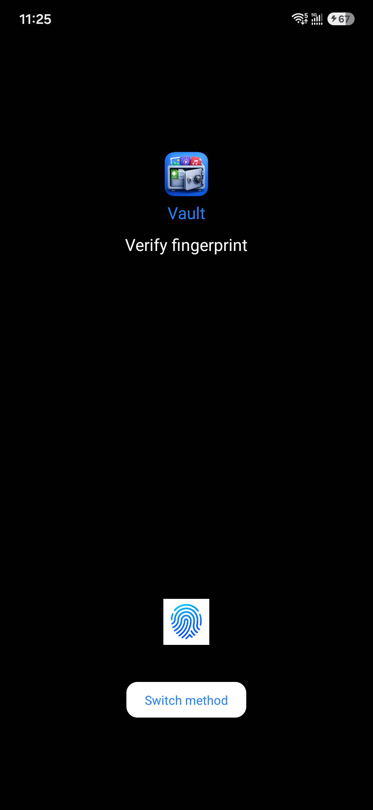
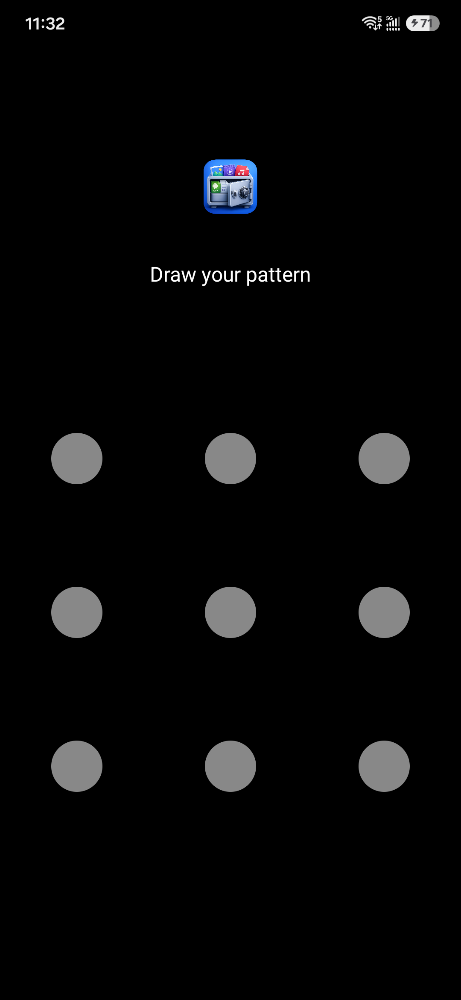
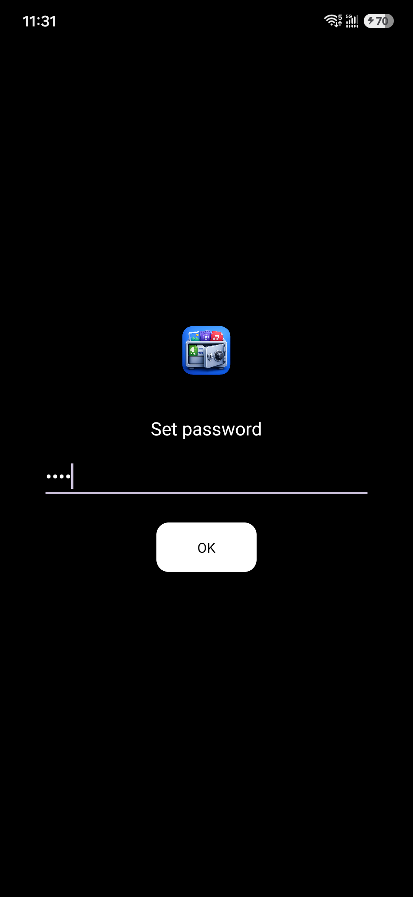
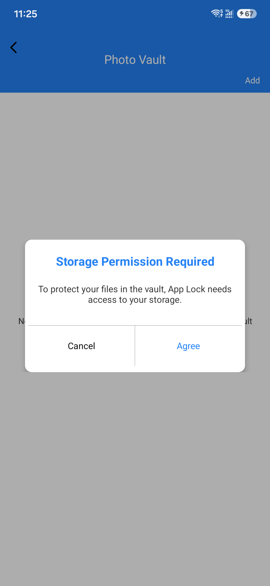
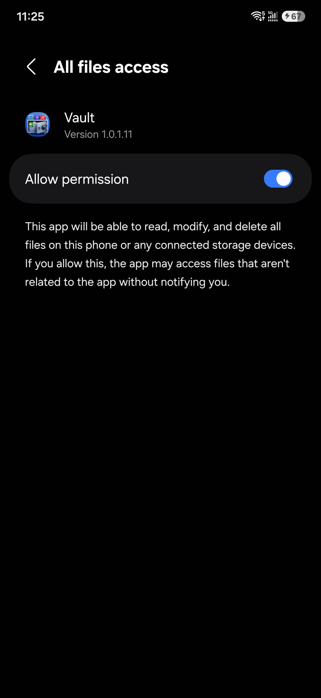
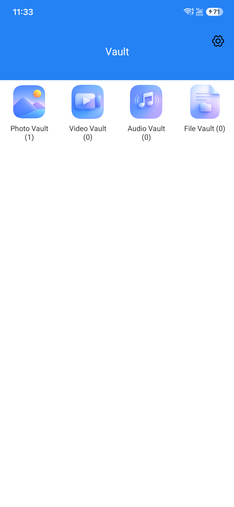
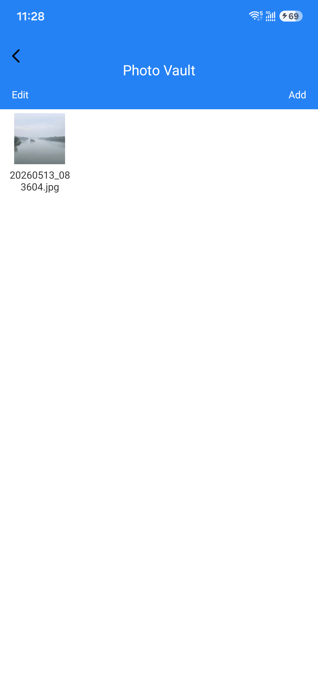
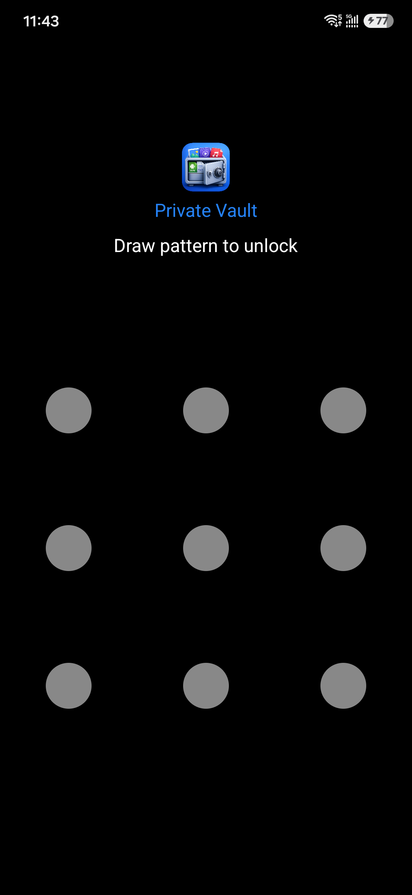

首次进入保险箱功能时，系统会提示您设置指纹密码、手势密码、或文本密码。该密码用于保护您隐藏的内容。



为了保证保险箱正常运行，请授予相关权限，例如：文件访问权限、相册权限、存储权限等。


进入保险箱后，您可以选择需要隐藏的内容，包括照片、视频、音频、文档以及应用安装包等。 添加后，这些内容将从系统中隐藏，仅在保险箱内可见。


添加完成后，所有隐藏内容都会被安全保护。只有输入正确密码后才能访问和管理这些文件。
